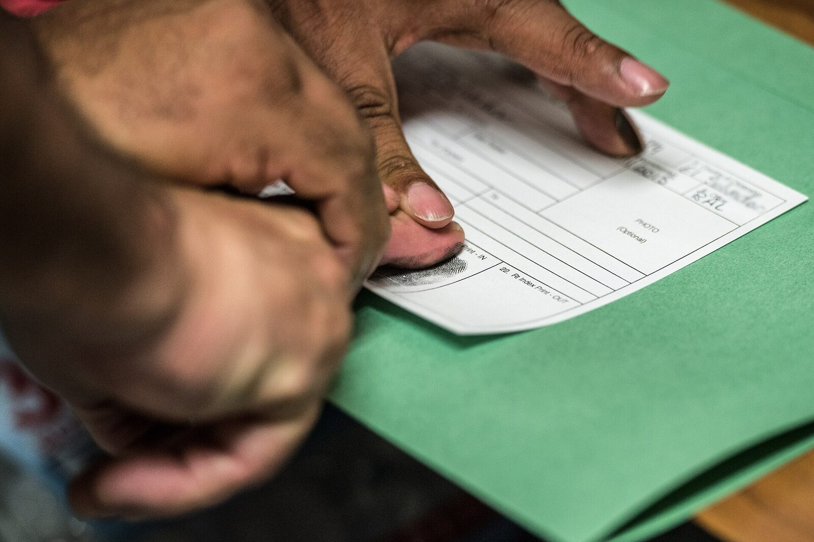
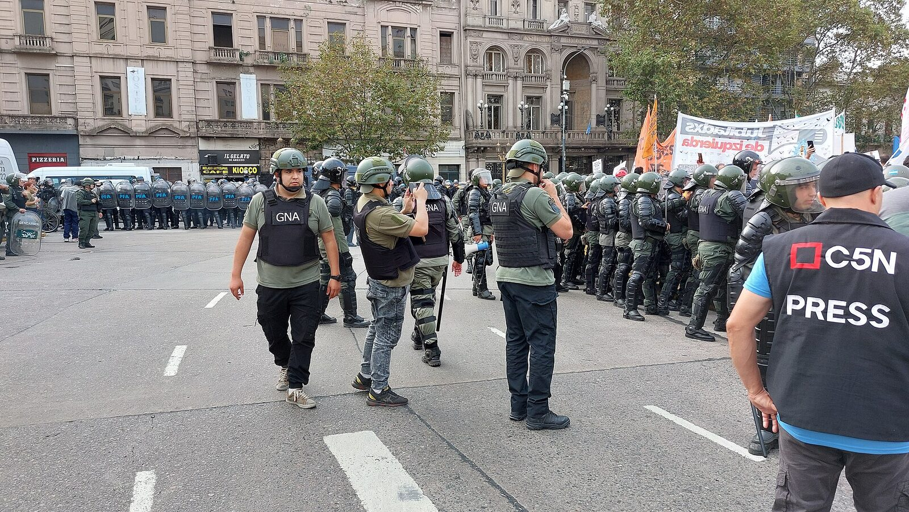
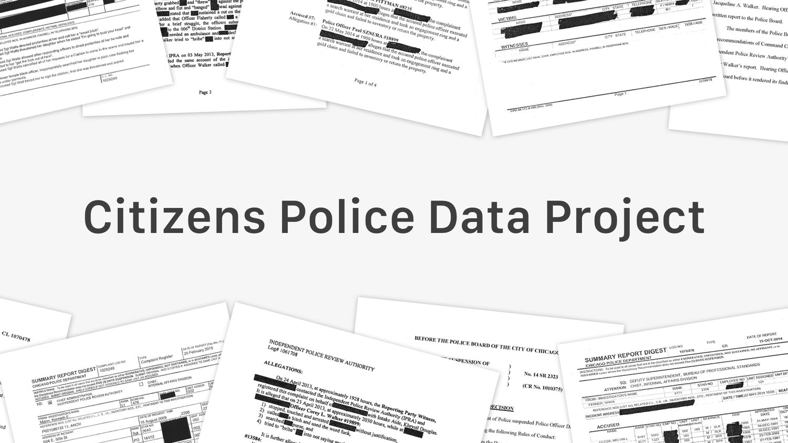
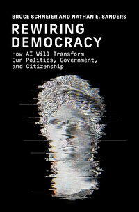

IA y Democracia 2026 — Semana 12
¿Cómo cambia la IA el balance de poder entre el Estado y los ciudadanos?
La curva roja baja.
Se interceptaba casi todo. Se leía casi nada.
Leer, resumir, cruzar y marcar personas, en tiempo real.

Ir al médico, aparecer en el mapa.
Business Insider (abr. 2025) · 404 Media y Fortune (ene. 2026) · Foto: ICE, dominio público
Se protegió el lugar, no el dato.
Emol (14-may-2026) · Boletín 16836-06, art. 104 bis, despachado el 20-oct-2026

Efecto inhibidor: mejor no ir.
Amnistía Internacional, Estado de vigilancia (ago. 2026) · Foto: Gendarmería frente al Congreso, 14-may-2025 · Iro Bosero, CC BY-SA 4.0
La curva roja sube. Schneier & Sanders, Rewiring Democracy, caps. 35–37.
Auditar desde abajo.
Schneier & Sanders, cap. 35 · Foto: Agência Senado, CC BY 2.0
«No somos reales. Los datos sí.»
Connectas · Schneier & Sanders, cap. 35 · Imagen: Operación Retuit, vía BBC Mundo

Vigilar a la policía con sus propios papeles.
Invisible Institute · Schneier & Sanders, cap. 35
Imágenes: Justicia Lab · Resistbot
La misma tecnología, en las dos manos.

Los dos lados usan la IA.
Pero uno parte con más poder.
¿La IA achica o agranda la asimetría de poder entre el Estado y los ciudadanos?
Argumenta con un par de casos de esta clase: uno de cada lado.
Los datos siempre estuvieron ahí.
Ahora alguien —algo— puede leerlos todos.
¿Quién?